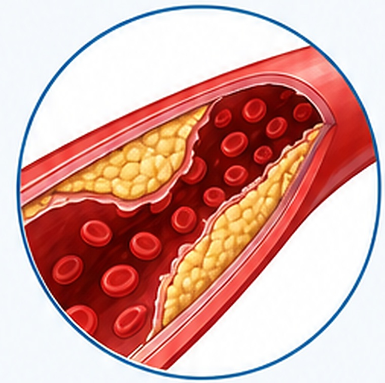

八、知识科普与长期健康管理

甘油三酯：隐形的健康杀手
甘油三酯（TG）升高会促进动脉粥样硬化的发生和发展，增加冠心病、心肌梗死、脑卒中等心血管疾病风险。同时，高甘油三酯还可能引发急性胰腺炎，威胁生命健康。
中青年代谢管理要点
中青年时期是代谢综合征的高发阶段，需重视体重管理，保持健康生活方式。建议控制体重、减少碳水化合物摄入、增加高强度运动，有助于改善血脂、降低心血管风险。
长期健康管理建议
- 每3个月复查血脂，持续监测指标变化
- 严格控制碳水化合物摄入，选择低GI食物
- 每日运动45分钟以上，建议高强度有氧+力量训练
- 如有胸闷、气短、头晕等症状，及时就医检查
免责声明
本报告仅供健康管理参考，不作为临床诊断依据。如有疑问，请及时就医和咨询专业医生。